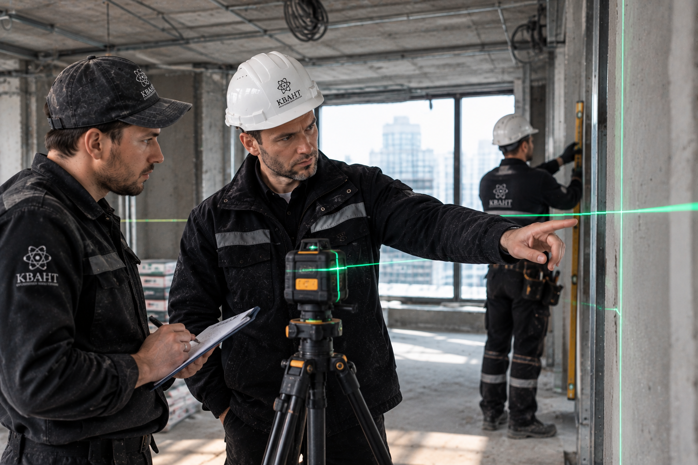
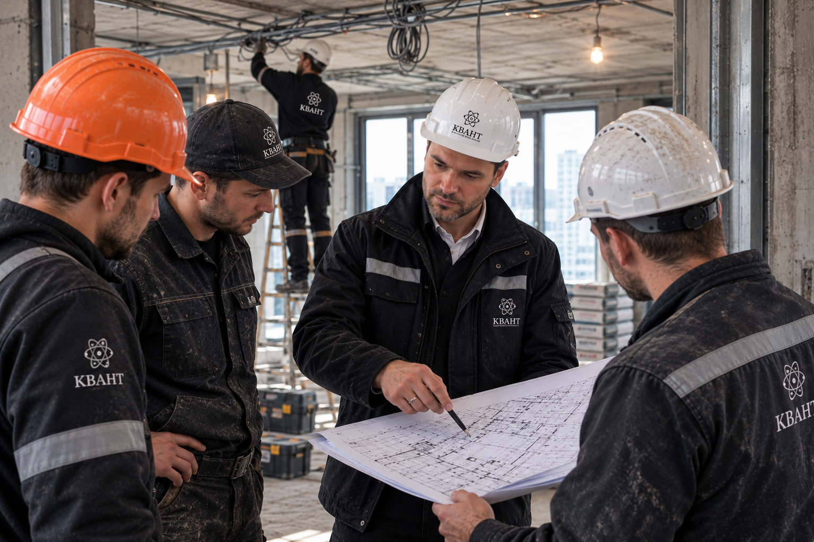
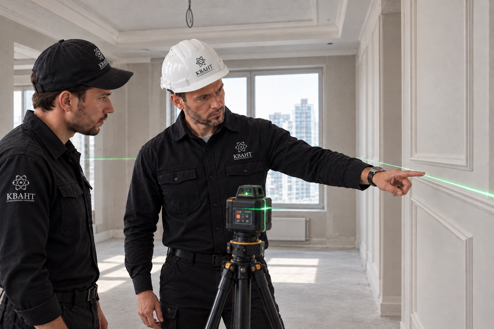

Плановые обходы объектов, проверка соответствия проекту и контроль качества выполнения работ.
Обсудить контроль объекта →


Выявляем отклонения на этапе, когда их ещё можно исправить без переделки готового интерьера.
Уровни, вертикали, горизонтали и подготовка поверхностей.
Сверяем фактические решения с согласованной документацией.
Проверяем выполнение ключевых этапов перед переходом дальше.
Оставьте контакты и кратко опишите объект. Заявка поступит в рабочий канал КВАНТ.